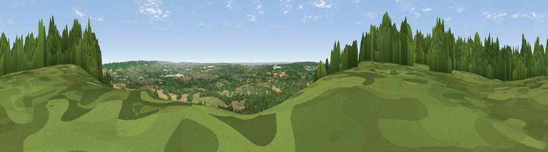

Viewpoint near Vigo Village
#9404 in England · top 2% of its area beats it · near Vigo VillageWhere it is
The exact computed spot (TQ 66238 61800). Click the marker for map links.
The view, rendered

A 360° render of this exact spot computed from the terrain model, tree cover and land cover — summer colours, afternoon light, calibrated against photographs of famous viewpoints. Real trees, hedges and buildings will differ in detail.
The panorama
Grey silhouette: terrain skyline in each direction (720 bearings, Earth curvature and refraction included). Dashed green: skyline with trees (+15 m) and buildings (+8 m) as obstacles. Blue strip: how far the ground is visible on each bearing.
Where the view opens
Wedge length = distance to the farthest visible ground on that bearing (vegetation-aware). Rings at 10, 25 and 50 km.
What fills the view
49% cropland · 32% woodland · 14% grassland · 4% built-up ·
Angular shares of the visible panorama (visual magnitude), not map area. Landscape diversity 0.51 (0–1 Shannon).
Key numbers
More beautiful places nearby
The staircase of upgrades: each row has a higher view potential than everything closer. Driving times are estimates from straight-line distance, calibrated against real road routing — check an actual route before setting out.
| Place | Direction | Drive | Score |
|---|---|---|---|
| Viewpoint near Vigo Village | WSW · 1 km | ~3 min | 65.0 |
| Viewpoint near Birling | NE · 1 km | ~3 min | 65.2 |
| Viewpoint near Wrotham | WSW · 5 km | ~11 min | 66.6 |
| Viewpoint near Boxley | E · 10 km | ~20 min | 68.6 |
| Viewpoint near Shipbourne | SW · 13 km | ~23 min | 69.1 |
| Viewpoint near Westwell | ESE · 35 km | ~53 min | 72.2 |
| Viewpoint near Lympne | ESE · 51 km | ~72 min | 72.6 |
| Viewpoint near Fairlight | SSE · 54 km | ~75 min | 74.7 |
51.33100, 0.38479 · source: screening · position refined by local search. Computed location — check access rights before visiting.